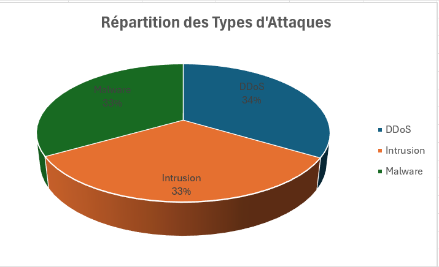

Voici une sélection de mes travaux les plus aboutis, démontrant ma capacité à concevoir des outils métier (SaaS), à gérer des infrastructures Cloud et à automatiser des tâches complexes.
Intelligence Artificielle
Outil Métier SaaS
Automatisation
Projet 1 : SignalHire — Assistant de Sourcing & Automatisation des Processus
Développement de A à Z d'une plateforme SaaS autonome. Cet outil illustre ma capacité à identifier un problème de productivité chronophage et à concevoir une solution technique robuste pour l'automatiser de bout en bout grâce à l'Agentic AI.

Piliers Technologiques
- Radar Sourcing : Agrégation d'offres en temps réel via APIs (LinkedIn, France Travail, Google Jobs, Welcome to the Jungle, Adzuna).
- Scoring Prédictif : Analyse sémantique de compatibilité entre offres et CV Maitre via Gemini et Groq.
- Automatisation LaTeX : Génération dynamique de CV et lettre de motivation qui matchent avec l'offre et optimisés pour les ATS.
Architecture & Robustesse
- Tiers de Fallback : Système de rotation de clés API et bascule autonome en cas de saturation des quotas LLM.
- Stack Moderne : Backend FastAPI, Frontend Next.js et base de données SQLite versionnée.
Compétences Mobilisées :
Python (FastAPI)
TypeScript (Next.js)
Generative AI (LLMs)
Data Aggregation
LaTeX Automation
Architecture SaaS
Ingénierie Cloud
Sécurité & ELK
Scripting Python
Projet 2 : Déploiement d'une Infrastructure Cloud & Plateforme ELK (Note: 19/20)
Ce projet illustre ma maîtrise de l'administration système Linux en environnement Cloud. Il allie ingénierie de la résilience, conteneurisation et gestion de données massives.

Ingénierie Système & Cloud
Déploiement sur Scaleway d'une infrastructure Docker hébergeant 20+ honeypots couplés à une pile ELK (Elasticsearch, Logstash, Kibana).
- Résilience : Gestion des ressources critiques (OOM Killer, Swap 8Go).
- Dépannage : Restauration de l'accès système via Mode Rescue et environnement
chroot suite à une corruption SSH.
Cyber Threat Intelligence (CTI)
Analyse des sessions interactives via Cowrie pour identifier la méthodologie des attaquants.
- Matrice MITRE ATT&CK : Cartographie des TTPs (Discovery, Command & Control).
- OSINT : Corrélation d'adresses IP suspectes via l'API AbuseIPDB (score de confiance 100%).
- Automatisation : Script Python d'extraction de rapports d'IOCs interrogeant l'API REST d'Elasticsearch.
Compétences Mobilisées :
Big Data (ELK Stack)
MITRE ATT&CK Mapping
Python Scripting
Linux Administration
Cyber Threat Intelligence
Docker Orchestration
Virtualisation & Réseau
Diagnostic
Sécurité Systèmes
Projet 3 : Audit Technique & Résolution de Vulnérabilités Systèmes
Construction et audit d'un laboratoire de machines virtuelles interconnectées, prouvant ma compréhension approfondie des réseaux, des systèmes d'exploitation et de leur sécurisation.

Mise en place d'une infrastructure réseau sous VirtualBox avec isolation stricte. Diagnostic approfondi des configurations erronées (failles de droits SUID, services obsolètes) et exploitation encadrée pour comprendre la logique des attaquants, afin de mieux blinder les serveurs en production.
Compétences Mobilisées :
Virtualisation
Nmap / Metasploit
Exploitation de Filles
Privilege Escalation
Ethical Hacking
Scripting Python
Administration Serveur
Analyse de Logs
Projet 4 : Automatisation de l'Analyse de Logs Serveur (Apache/Linux)

Développement de scripts Python (Pandas) permettant d'analyser de gigantesques fichiers de logs serveurs pour isoler les anomalies. Ce projet démontre ma capacité à utiliser le scripting pour faciliter le travail d'administration système et automatiser le diagnostic (détection de bruteforce, monitoring des requêtes HTTP).
Compétences Mobilisées :
Data Science Appliquée
Python (Pandas/Matplotlib)
Analyse de Logs Apache
Threat Hunting
Veille Active
Web Security
Crypto
Projet 5 : Apprentissage Continu — Root-Me & Challenges CTF
Engagement quotidien dans la résolution de challenges de sécurité pour maintenir une veille technique active sur les dernières vulnérabilités découvertes.